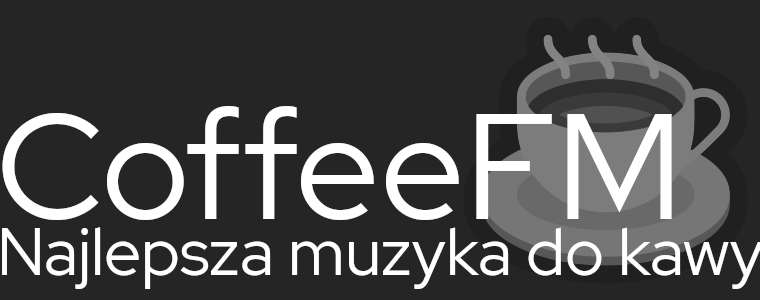

Tu powinien być Twój ulubiony serwis internetowy
Dzisiaj wydajemy specjalną wersję serwisu w związku z akcją "Media bez wyboru".
Przepraszamy naszych użytkowników.
Dziękujemy za zrozumienie i wsparcie.
Przeczytaj nasz list otwarty:
List otwarty
do władz Rzeczypospolitej Polskiej
i
liderów ugrupowań politycznych
Zwracamy się w sprawie zapowiadanego nowego, dodatkowego obciążenia mediów działających na polskim rynku, myląco nazywanego „składką”, wprowadzaną pod pretekstem Covid-19.
Jest to po prostu haracz, uderzający w polskiego widza, słuchacza, czytelnika i internautę, a także polskie produkcje, kulturę, rozrywkę, sport oraz media.
Wprowadzenie go będzie oznaczać:
- osłabienie, a nawet likwidację części mediów działających w Polsce, co znacznie ograniczy społeczeństwu możliwość wyboru interesujących go treści,
- ograniczenie możliwości finansowania jakościowych i lokalnych treści. Ich produkcja daje obecnie utrzymanie setkom tysięcy pracowników i ich rodzinom oraz zapewnia większości Polaków dostęp do informacji, rozrywki oraz wydarzeń sportowych w znaczącej mierze bezpłatnie,
- pogłębienie nierównego traktowania podmiotów działających na polskim rynku medialnym, w sytuacji, gdy media państwowe otrzymują co roku z kieszeni każdego Polaka 2 mld złotych, media prywatne obciąża się dodatkowym haraczem w wysokości 1 mld zł,
- faktyczne faworyzowanie firm, które nie inwestują w tworzenie polskich, lokalnych treści kosztem podmiotów, które w Polsce inwestują najwięcej. Według szacunków, firmy określane przez rząd jako „globalni cyfrowi giganci” zapłacą z tytułu wspomnianego haraczu zaledwie ok. 50 - 100 mln zł w porównaniu do 800 mln zł, jakie zapłacą pozostałe aktywne lokalnie media.
Skandaliczne jest również niesymetryczne i selektywne obciążenie poszczególnych firm. Dodatkowo niedopuszczalna w państwie prawa jest próba zmiany warunków koncesyjnych w okresie ich obowiązywania.
Jako media działające od wielu lat w Polsce nie uchylamy się od ciążących na nas obowiązków i społecznej odpowiedzialności. Co roku płacimy do budżetu Państwa rosnącą liczbę podatków, danin i opłat (CIT, VAT, opłaty emisyjne, organizacje zarządzające prawami autorskimi, koncesje, częstotliwości, decyzje rezerwacyjne, opłata VOD itd.). Własną działalnością charytatywną wspieramy też najsłabsze grupy naszego społeczeństwa. Wspieramy Polaków, jak i rząd w walce z epidemią, zarówno informacyjnie, jak i przeznaczając na ten cel zasoby warte setki milionów złotych.
Zdecydowanie sprzeciwiamy się więc używaniu epidemii, jako pretekstu do wprowadzenia kolejnego, nowego, wyjątkowo dotkliwego obciążenia mediów. Obciążenia trwałego, które przetrwa epidemię Covid-19.
Sygnatariusze listu:
- Agencja Wydawnicza AGARD Ryszard Pajura
- Agora S.A.
- AMS S.A.
- Bonnier Business
- Burda Media Polska
- CANAL+
- Dziennik Trybuna
- Dziennik Wschodni
- Edipresse Polska
- Eleven Sports Network sp. z o.o.
- Gazeta Radomszczańska
- Gazeta Żoliborza
- Green Content sp. z o.o.
- Gremi Media S.A.
- Grupa Eurozet
- Grupa Interia.pl sp. z. o.o.
- Grupa Radiowa Agory sp. z o.o.
- Grupa RMF
- Grupa Wirtualna Polska
- Grupa ZPR
- Helios S.A.
- Infor Biznes
- Kino Polska TV S.A.
- Lemon Records sp. z o.o.
- Marshal Academy
- Music TV sp. z o.o.
- Muzo.fm sp. z o.o.
- naTemat.pl
- OKO.press
- Polityka
- Polska Press Grupa
- Ringier Axel Springer Polska
- STAVKA sp. z o.o.
- Superstacja sp. z o.o.
- Telewizja Polsat sp. z o.o.
- Telewizja Puls sp. z o.o.
- Telewizja Regionalna TVT
- TIME S.A.
- TV Spektrum sp. z o.o.
- TVN S.A.
- Tygodnik Powiatu Wołowskiego Kurier Gmin
- Tygodnik Powszechny
- Wydawnictwo Bauer
- Wydawnictwo Dominika Księskiego Wulkan
- Wydawnictwo Magraf
- Wydawnictwo Nowiny
- Zakopiańskie Towarzystwo Gospodarcze - Tygodnik Podhalański